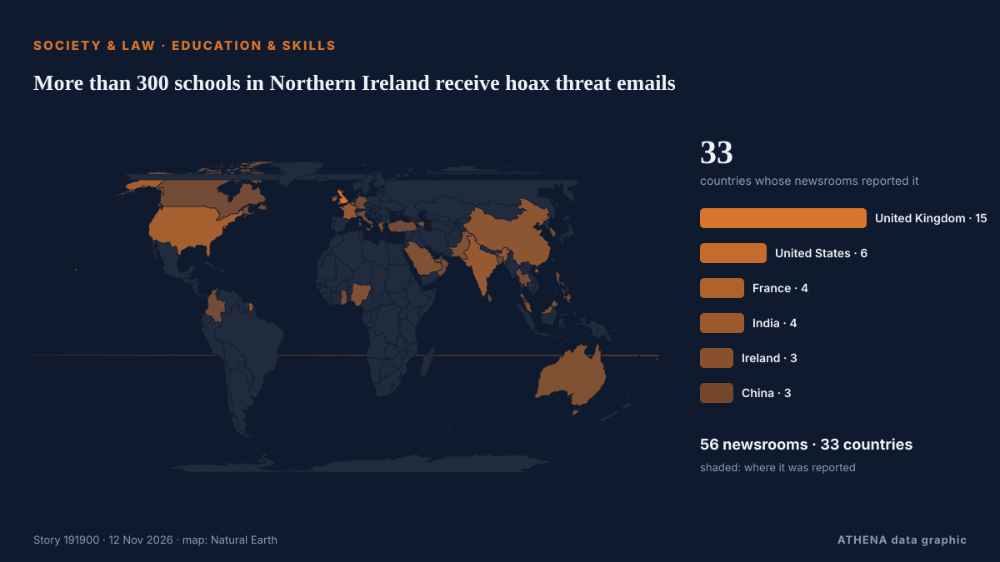

More than 300 schools in Northern Ireland receive hoax threat emails

European officials suspect Russia may be behind a campaign of disruption to everyday life in European nations. από Express Tribune
Αναφέρθηκε ανεξάρτητα από 56 μέσα σε 33 χώρες από τις 11 Νοε, πρώτο το Express Tribune· η κάλυψη εξασθενεί. Το ATHENA εκτιμά τον κίνδυνο υψηλό (6.1/10), κυρίως λόγω της σοβαρότητάς του και της εμβέλειάς του — από 0.0 πριν από 24 ώρες. Βεβαιότητα 91% (υψηλή): το επιβεβαιώνουν 56 ανεξάρτητα μέσα, μέση αξιοπιστία 74%. Μέσα ανά χώρα: Ηνωμένο Βασίλειο (13), Ηνωμένες Πολιτείες (3), Πακιστάν (2). Κάλυψη: 11 Νοε έως 11 Νοε, 8 ώρες.
Γιατί έχει σημασία: Οι νομικές αλλαγές και οι αλλαγές πολιτικής μεταβάλλουν δικαιώματα, υποχρεώσεις και δημόσιες υπηρεσίες για όσους αφορούν.
Τι άλλαξε: 68 νέες αναφορές από 52 μέσα στο 24ωρο έως 12 Νοε.
Πρώτη διατύπωση: Government says ‘no need to evacuate’ after hundreds of schools receive bomb threat emails
Οι τίτλοι των ειδήσεων παρουσιάζονται στα αγγλικά, όπως δημοσιεύτηκαν.
Πώς να διαβάσετε αυτή τη σελίδα
- Τι διαβάζετε
- 56 μέσα σε 33 χώρες ανέφεραν αυτό το γεγονός. Οι αναφορές παρακάτω εμφανίζονται με τη σειρά που δημοσιεύτηκαν· κάθε τίτλος ανοίγει το αρχικό άρθρο. Το ATHENA δεν γράφει δικά του ρεπορτάζ.
- Η εκτίμησή μας
- Για την καταγραφή — Οι αναφορές περιγράφουν ένα ολοκληρωμένο, εσωτερικό, εμπορικό ή προσωπικό ζήτημα. Το καταγράφουμε ώστε να βλέπετε ποιος το ανέφερε και πότε. Δεν παρακολουθούμε εδώ κίνδυνο ευρύτερης σύγκρουσης.
- Πόσα στοιχεία υπάρχουν
- Ισχυρή Πολλά ανεξάρτητα μέσα σε πολλές χώρες περιγράφουν το ίδιο γεγονός.
Αφού αφαιρεθούν οι επαναλήψεις, τα άσχετα και τα παλιά στοιχεία, υπολογίζονται 23 από τις 40 αναφορές που παρατίθενται· το 95% των τίτλων αντιστοιχεί στο γεγονός.
- Τι δεν σημαίνει
- Το ATHENA μετρά πώς καλύπτεται ένα γεγονός, όχι αν είναι αληθές. Δεν είναι πρόβλεψη, κρίση για το ποιος έχει δίκιο ή συμβουλή.
- Τι θα την άλλαζε
- Αναφορές από άλλα ανεξάρτητα μέσα που δείχνουν διαφορετική εξέλιξη, ή σαφής επιβεβαίωση ή διάψευση από επίσημη πηγή.
Εκτίμηση R2 · ανανεώνεται με κάθε ενημέρωση της σελίδας. Το ATHENA δεν έχει δημοσιεύσει ακόμη ιστορικό επιδόσεων για αυτές τις εκτιμήσεις· όταν το κάνει, θα συνδέεται εδώ.
Με μια ματιά
Επιλέγεται, βαθμολογείται και γράφεται από τη δημοσιευμένη μεθοδολογία του ATHENA. Κανένας συντάκτης δεν παρεμβαίνει σε μεμονωμένα γεγονότα. Πώς παράγεται ›
| 11 Nov 07:09 UTC | 1 |
|---|---|
| 11 Nov 08:09 UTC | 0 |
| 11 Nov 09:09 UTC | 0 |
| 11 Nov 10:09 UTC | 8 |
| 11 Nov 11:09 UTC | 11 |
| 11 Nov 12:09 UTC | 8 |
| 11 Nov 13:09 UTC | 10 |
| 11 Nov 14:09 UTC | 5 |
| 11 Nov 15:09 UTC | 2 |
| 11 Nov 16:09 UTC | 3 |
| 11 Nov 17:09 UTC | 3 |
| 11 Nov 18:09 UTC | 3 |
| 11 Nov 19:09 UTC | 2 |
| 11 Nov 20:09 UTC | 5 |
| 11 Nov 21:09 UTC | 1 |
| 11 Nov 22:09 UTC | 1 |
| 11 Nov 23:09 UTC | 1 |
| 12 Nov 00:09 UTC | 0 |
| 12 Nov 01:09 UTC | 0 |
| 12 Nov 02:09 UTC | 2 |
| 12 Nov 03:09 UTC | 1 |
| 12 Nov 04:09 UTC | 0 |
| 12 Nov 05:09 UTC | 1 |
| 11 Nov 11:36 UTC | 0.0 |
|---|---|
| 11 Nov 11:44 UTC | 5.0 |
| 11 Nov 14:01 UTC | 6.5 |
| 11 Nov 16:58 UTC | 6.2 |
| 11 Nov 20:13 UTC | 6.7 |
| 11 Nov 22:18 UTC | 6.2 |
| 11 Nov 23:07 UTC | 6.7 |
| 12 Nov 00:06 UTC | 6.2 |
| 12 Nov 06:00 UTC | 6.1 |
Γιατί αυτοί οι αριθμοί
Σημασία
Κίνδυνος
Βεβαιότητα
Η κάλυψη — ποιος το ανέφερε και πότε
ο τίτλος όπως δημοσιεύτηκε · ανοίγει το πρωτότυπο- Express Tribune · ΠακιστάνHoax bomb alerts sent to schools in Italy, UK and Ireland in latest disruption
- The Scotsman · Ηνωμένο ΒασίλειοScottish Schools Evacuated RECAP: Hundreds of pupils evacuated after suspected 'hoax' bomb threats
- The Herald (Scotland) · Ηνωμένο ΒασίλειοAll Edinburgh schools evacuated on Wednesday morning over 'threatening messages' hoax
- To Vima (English) · ΕλλάδαHoax Bomb Emails Hit Schools In Italy, Ireland and Scotland
- The Herald (Scotland) · Ηνωμένο ΒασίλειοSchools across Scotland evacuated after hoax threat made
- TheJournal.ie · ΙρλανδίαGovernment says ‘no need to evacuate’ after hundreds of schools receive hoax bomb threat emails
- The Straits Times · ΣιγκαπούρηBomb hoaxes empty over 300 Italian schools as threats reach Scotland and Ireland
- France 24 English · ΓαλλίαWave of hoax bomb threats sent to schools in UK, Ireland and Italy
- The Scotsman · Ηνωμένο ΒασίλειοPolice Scotland issue response after schools evacuated due to threatening 'hoax' messages
- Evening Standard (London) · Ηνωμένο Βασίλειο‘Urgent inquiries’ after threatening email sent to hundreds of schools
- The Straits Times · ΣιγκαπούρηHoax bomb alerts sent to schools in Italy, UK and Ireland in latest disruption
- The Irish News (Belfast) · Ηνωμένο ΒασίλειοNorthern Ireland schools receive second hoax email threat in a month
- Times of India · ΙνδίαOver 6,000 schools in Italy get bomb threats; similar warnings in UK & Ireland
- The Scotsman · Ηνωμένο ΒασίλειοSchool bomb threats: Everything you need to know so far
- APA (English) · ΑζερμπαϊτζάνAt least 300 Italian schools evacuated after email bomb alerts
- Irish Mirror · ΙρλανδίαWhat we know so far as RTÉ and schools targeted again in email bomb threat
- New Straits Times · ΜαλαισίαSchools evacuated across Italy after bomb threats
- Manchester Evening News · Ηνωμένο ΒασίλειοPolice respond after threatening emails sent to hundreds of schools across the UK
- Gulf News · Ηνωμένα Αραβικά ΕμιράταSchools evacuated across Italy after bomb threats
- The Independent · Ηνωμένο ΒασίλειοSome 300 Italian schools evacuated due to bomb threats
- The Irish News (Belfast) · Ηνωμένο Βασίλειο300 Italian schools evacuated due to bomb threats
- BBC News · Ηνωμένο ΒασίλειοSchools in Italy, Scotland and Northern Ireland hit by threats in suspected bomb hoax
- Evening Standard (London) · Ηνωμένο ΒασίλειοPolice treating threatening messages sent to schools in UK as hoaxes
- News of Bahrain · ΜπαχρέινItaly on alert as bomb threats force school evacuations
- CNBC World · Ηνωμένες ΠολιτείεςHundreds of schools in Italy, UK evacuated over 'hoax' bomb threats
- The Business Standard (Bangladesh) (working feed) · ΜπανγκλαντέςHoax bomb alerts sent to schools in Italy, UK and Ireland in latest disruption
- The National Herald · Ηνωμένες ΠολιτείεςSome 300 Italian Schools Evacuated Due to Bomb Threats
- Le Monde (English) · ΓαλλίαItaly evacuates schools after bomb threats
- Evening Standard (London) · Ηνωμένο ΒασίλειοPolice treat threatening email sent to hundreds of NI schools as ‘hoax’
- Dawn · ΠακιστάνHoax bomb alerts sent to schools in Italy, UK, Ireland in latest disruption
- Euractiv · ΒέλγιοSchools evacuated across Italy after bomb threats
- Al Jazeera English · ΚατάρSchools across Italy evacuated after receiving email bomb alerts
- NDTV · Ινδία300 Schools In Italy Evacuated After Bomb Threat Emails From 'Misoginistan'
- ABC News (International) · Ηνωμένες ΠολιτείεςSome 300 Italian schools evacuated due to bomb threats
- DW English · ΓερμανίαItaly: Hundreds of schools evacuated after bomb threats
- Free Malaysia Today · ΜαλαισίαHoax bomb alerts sent to schools in Italy, UK and Ireland
- The Korea Times · Νότια ΚορέαBomb alerts sent to schools in Italy and Northern Ireland in latest threats
- China Daily — page reader · ΚίναSeveral schools in Rome evacuated after emailed bomb threats: media
- Türkiye Today · ΤουρκίαHundreds of schools evacuated across Italy after emailed bomb threats
- Ada Derana · Σρι ΛάνκαHoax bomb alerts sent to schools in Italy, UK and Ireland in latest disruption